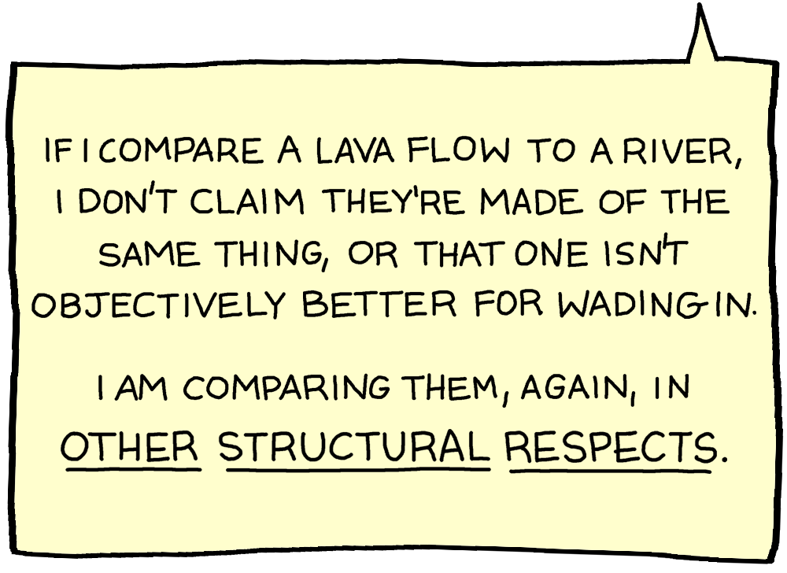
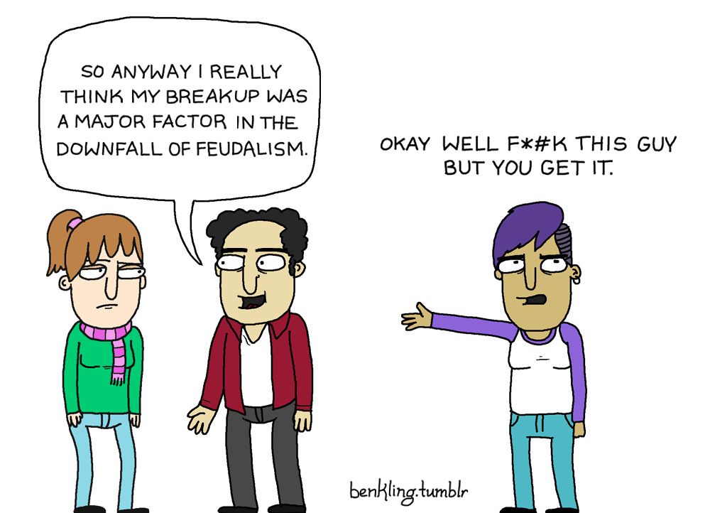

Claim: I am annoyed at a vegan's comparison to X
Details
This is feigned outrage as a means of avoiding the issue. E.g. towards the claim that it's morally inconsistent to have one standard for human slavery (in America) and another for animal suffering, the dodge is "Oh no, you did not just compare black people to animals!"
Problems With This Argument
1. Comparing things isn't equating them
I'll go ahead and let this comic do the explaining:






2. You're missing the point
The point is that you apply one standard of ethics in one area of life where things are already obviously wrong to you, and a different standard in a different area of life where it seems it's not so obvious. Yes, it's a different area, because the two things that are being compared are different things (If they were the same, there wouldn't be any point in comparing them, would there?). But what the argument that brought you to this page is trying to say is "be consistent across these two different areas... that are, again, not the same thing".
3. This just dodges the issue, but gives feigned moral superiority
The point is that carnism hurts animals, the environment, other people, and yourself. Oh, you didn't like the way a vegan said something one time? Ok great, well, carnism still hurts animals, the environment, other people, and yourself. You stating that you were once offended doesn't counter any of those arguments. It's stating an irrelevant fact.